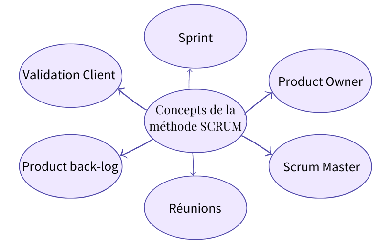

Pour assurer le bon déroulement du projet, nous avons appliqué les principes des méthodologies Agile et Scrum, adaptées aux projets collaboratifs et évolutifs. Ces approches nous ont permis d’organiser le travail en cycles courts, appelés sprints, favorisant une production incrémentale et des ajustements fréquents.
Gestion de projet


Chaque membre de l’équipe a été amené à endosser différents rôles, notamment ceux de Product Owner (PO) et de Scrum Master.
Le PO était chargé de définir et de prioriser les fonctionnalités en fonction des attentes du client, tandis que le Scrum Master veillait à maintenir une dynamique d’équipe efficace en animant les réunions et en s’assurant du respect des processus Scrum.
J'ai pu expérimenter le rôle de Scrum Master sur ce projet
Nous avons structuré notre travail autour de quatre types de réunions clés :
- Sprint Retrospective : Analyse des points forts et des axes d’amélioration pour optimiser les prochains sprints.
- Sprint Planning : En début de sprint, pour définir les User Stories à réaliser et organiser les tâches.
- Daily Meetings : Courtes réunions quotidiennes pour suivre l’avancement et résoudre les blocages.
- Sprint Review : En fin de sprint, présentation des résultats obtenus au client, avec démonstration des fonctionnalités.
Enfin, une partie essentielle de notre démarche a été de maintenir une communication fluide avec l’association Yggame, en organisant des réunions régulières pour discuter de leurs besoins, valider nos choix et recueillir leurs retours.
Ces échanges nous ont permis de mieux comprendre leurs attentes et d’ajuster rapidement nos priorités en fonction de leurs retours.
A propos du projet
Versionning : GitLab
Equipe : 5 personnes
Outils de développement : /
Durée du projet : du 13 septembre 2025 au 10 janvier 2025 : 4 mois
Communication : GoogleDocs, réunions, discussions, Discord